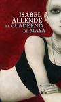
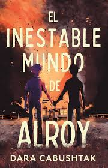
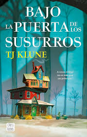
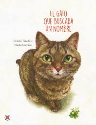
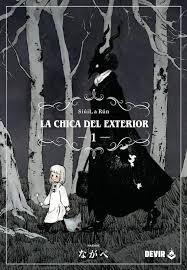

Bienvenido a mi página de recomendaciones literarias. Aquí comparto algunos libros que me han gustado y que recomiendo leer.

Una historia intensa sobre una joven que huye de su pasado y busca reconstruir su vida en un lugar remoto.

Una novela que explora la fragilidad de la mente humana y las decisiones que cambian el destino.

Una historia conmovedora sobre la vida, la muerte y las segundas oportunidades.
Un thriller lleno de misterio donde un grupo de jugadores intenta resolver crímenes reales.

Una tierna historia sobre identidad, amistad y el significado de encontrar un hogar.

Un manga oscuro y poético sobre dos mundos separados y la conexión entre una niña y una criatura misteriosa.
"La lectura es para la mente lo que el ejercicio es para el cuerpo."